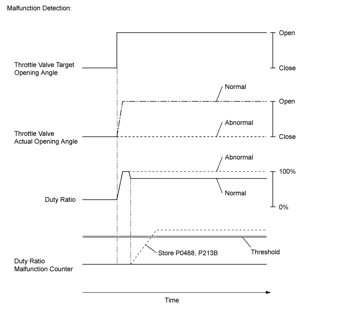
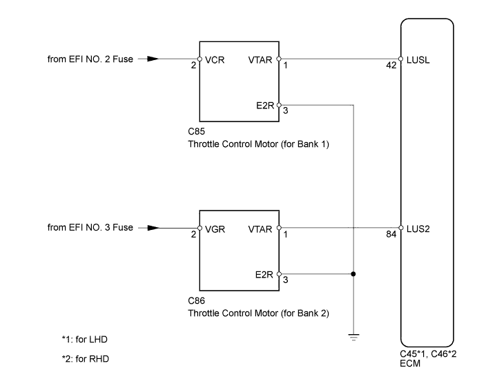
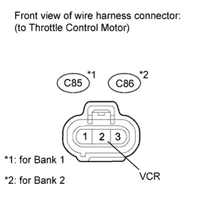
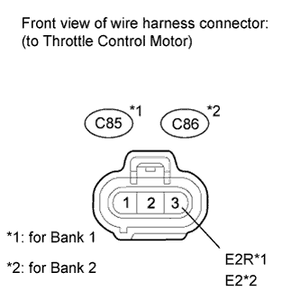
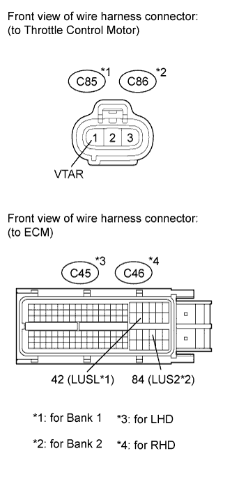

DTC P0488 Exhaust Gas Recirculation Throttle Position Control Range / Performance |
DTC P213B Exhaust Gas Recirculation Throttle Position Control (Range / Performance) |
| DTC Detection Drive Pattern | DTC Detection Condition | Trouble Area |
| Over a period of 10 seconds or more, slowly raise engine speed to 3000 rpm and lower it | The throttle motor activation duty is less than 10% or 90% or more for 30 seconds (1 trip detection logic).
|
|
| DTC Detection Drive Pattern | DTC Detection Condition | Trouble Area |
| Over a period of 10 seconds or more, slowly raise engine speed to 3000 rpm and lower it | The throttle motor activation duty is less than 10% or 90% or more for 30 seconds (1 trip detection logic).
|
|
| DTC No. | Data List |
| P0488 |
|
| P213B |
| Condition | Throttle Valve Position |
| Moment when accelerator pedal is depressed further or released at 3000 rpm | Throttle valve opening angle varies smoothly |


| 1.CHECK HARNESS AND CONNECTOR (THROTTLE CONTROL MOTOR POWER SOURCE) |
 |
Disconnect the throttle control motor connector.
Measure the voltage according to the value(s) in the table below.
| Tester Connection | Switch Condition | Specified Condition |
| C85-2 (VCR) - Body ground | Engine switch on (IG) | 11 to 14 V |
| Tester Connection | Switch Condition | Specified Condition |
| C86-2 (VCR) - Body ground | Engine switch on (IG) | 11 to 14 V |
|
| ||||
| OK | |
| 2.CHECK HARNESS AND CONNECTOR (GROUND CIRCUIT) |
 |
Disconnect the throttle control motor connector.
Measure the resistance according to the value(s) in the table below.
| Tester Connection | Condition | Specified Condition |
| C85-3 (E2R) - Body ground | Always | Below 1 Ω |
| Tester Connection | Condition | Specified Condition |
| C86-3 (E2R) - Body ground | Always | Below 1 Ω |
|
| ||||
| OK | |
| 3.CHECK HARNESS AND CONNECTOR (THROTTLE CONTROL MOTOR - ECM) |
 |
Disconnect the throttle control motor connector.
Disconnect the ECM connector.
Measure the resistance according to the value(s) in the table below.
| Tester Connection | Condition | Specified Condition |
| C85-1 (VTAR) - C45-42 (LUSL) | Always | Below 1 Ω |
| Tester Connection | Condition | Specified Condition |
| C86-1 (VTAR) - C45-84 (LUS2) | Always | Below 1 Ω |
| Tester Connection | Condition | Specified Condition |
| C85-1 (VTAR) - C46-42 (LUSL) | Always | Below 1 Ω |
| Tester Connection | Condition | Specified Condition |
| C86-1 (VTAR) - C46-84 (LUS2) | Always | Below 1 Ω |
| Tester Connection | Condition | Specified Condition |
| C85-1 (VTAR) or C45-42 (LUSL) - Body ground | Always | 10 kΩ or higher |
| Tester Connection | Condition | Specified Condition |
| C86-1 (VTAR) or C45-84 (LUS2) - Body ground | Always | 10 kΩ or higher |
| Tester Connection | Condition | Specified Condition |
| C85-1 (VTAR) or C46-42 (LUSL) - Body ground | Always | 10 kΩ or higher |
| Tester Connection | Condition | Specified Condition |
| C86-1 (VTAR) or C46-84 (LUS2) - Body ground | Always | 10 kΩ or higher |
|
| ||||
| OK | |
| 4.REPLACE DIESEL THROTTLE BODY ASSEMBLY (for Bank 1 or Bank 2) |
Replace the diesel throttle body assembly (for Bank 1 or Bank 2) (Click here).
| NEXT | |
| 5.CHECK WHETHER DTC OUTPUT RECURS |
Clear DTCs (Click here).
Connect the intelligent tester to the DLC3.
Turn the engine switch on (IG) and turn the tester on.
Start the engine.
Over a period of 10 seconds or more, slowly raise the engine speed to 3000 rpm and lower it.
Enter the following menus: Powertrain / Engine / DTC.
Read the DTCs.
| Result | Proceed to |
| P0488 and/or P213B is output | A |
| No DTC is output | B |
|
| ||||
| A | |
| 6.REPLACE ECM |
Replace the ECM (Click here).
|
| ||||
| 7.REPAIR OR REPLACE HARNESS OR CONNECTOR (THROTTLE CONTROL MOTOR - BATTERY) |
|
| ||||
| 8.REPAIR OR REPLACE HARNESS OR CONNECTOR |
| NEXT | |
| 9.CONFIRM WHETHER MALFUNCTION HAS BEEN SUCCESSFULLY REPAIRED |
Connect the intelligent tester to the DLC3.
Clear the DTCs (Click here).
Turn the engine switch off.
Start the engine.
Over a period of 10 seconds or more, slowly raise the engine speed to 3000 rpm and lower it.
Confirm that the DTC is not output again.
Enter the following menus: Powertrain / Engine / Utility / All Readiness.
Input DTC P0488 and/or P213B.
Check that STATUS is NORMAL. If STATUS is INCOMPLETE or UNKNOWN, over a period of 10 seconds or more, slowly raise the engine speed to 3000 rpm again and then idle the engine for 5 minutes.
| NEXT | ||
| ||